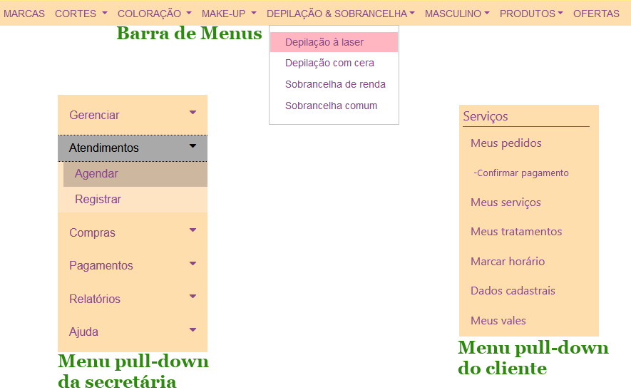

Guia de Estilo
Início
Desktop
Web
(current)
Sobre
Diretrizes Gerais
Layout
Fonte (Letras)
Componentes
Janelas
Formulários
• Menus
Caixas de Diálogo
Caixas de Mensagem
Modelos de Interface
Login
Tela Principal
Tela Principal da secretária
CRUD
Calendário
Mestre Detalhe
Pagamento
Relatório
Diretrizes de Caixas de Diálogo
No fim desta página
, há orientações referentes aos
Menus
:

Menus
para várias situações
Menus
são listas de itens na qual uma ou mais seleções podem ser feitas pelo usuário. Eles fornecem escolhas aos usuários e promovem uma troca de informações ou diálogo entre o usuário e a aplicação.
O uso de
Menus
reduz a necessidade de memorização pelos usuários, visto que ele seleciona itens de uma lista diretamente, o que reduz o número de erros possíveis.
Utilizadas neste exemplo (válidas para WEB e DESKTOP):
Menus Pull-down:
somente o título do menu ocupa espaço permanente na tela. São utilizados para se acessar as funções mais importantes do sistema;
Os títulos de menu representam todo o menu e devem, portanto, comunicar tão claro quanto possível o propósito de todos as opções;
Sempre que possível, use apenas uma palavra, não composta e curta para os títulos de menu;
Utilize, na inicial do título, letra maiúscula;
Quanto ao número de opções nos
Menus Pull-down
, restrinja a, no máximo, 8 (oito) itens;
Organize as funções em categorias segundo uma lógica:
Por exemplo: os CRUDs em uma categoria, as funções de relatório em outra.
Atenção 1:
neste projeto exemplo, optou-se por usar, no caso da secretária, um menu com sub-itens que somente ficam visíveis quando o usuário clica na setinha para baixo, devido à grande quantidade de sub-itens; se fosse organizado tal como o menu do cliente, com apenas o recuo do sub-item, o menu da secretária ficaria muito extenso, prejudicando a estética da interface.
Atenção 2:
esse tipo de menu, com essa disposição vertical, é mais comum em
Sistemas Web
. Em
Desktop
, os
Menus Pull-down
são dispostos mais horizontalmente, a exemplo da Barra de Menus:
Barra de Menus:
esse tipo de menu é usado para exibir um conjunto de menus em uma linha horizontal, normalmente na parte superior de uma janela. Todas as regras do
Menu Pull-down
se aplicam a ele também.
Outras diretrizes:
Menus Dinâmicos:
tipo de menu que possui opções que se ativam ou desativam de acordo com o cenário:
Exemplo: Os possíveis vôos entre duas cidades, que só pode ser determinado quando o usuário especifica as cidades origem e destino em tempo de execução.
Menus Pop-up:
este tipo de menu contém funções referentes a um elemento específico:
Sua principal vantagem é relativa a utilização de espaço por não ser exibido permanentemente;
Além disso, ele pode aparecer em diferentes lugares na tela, determinado pela posição corrente do cursor, quando o usuário clica com um botão específico do mouse.
Menus de Alternativa (Toggle Menu):
as possíveis escolhas são apresentadas uma de cada vez a cada acionamento do usuário.
Seu uso é indicado quando:
Há um pequeno número de opções, por exemplo, para escolhas binárias do tipo on/off;
Há pouco espaço na tela, no entanto, as escolhas não podem ser todas visíveis simultaneamente.
Menus de Cascata:
quando o usuário seleciona uma opção num nível, surgem as opções do nível mais abaixo;
Eles aumentam a complexidade do software; por isso é recomendado que não se utilize mais de um.
Menus de Comando:
as escolhas são distribuídas sobre botões separados e eles são visíveis a todo tempo em uma determinada janela. Aparecem em muitas interfaces por meio dos botões:
ok, sair, calcelar, ajuda
e comandos básicos específicos da aplicação. Algumas orientações:
O botão padrão tem aparência diferente dos outros e costuma ser a opção mais segura para o usuário. A posição dele deve ser a mais alta, se os mesmo estiverem dispostos verticalmente, e mais a esquerda, se estiverem dispostos horizontalmente;
Devem estar localizados preferencialmente na parte inferior da tela;
Se a mensagem requer do usuário uma escolha, inclua um botão de comando para cada escolha. A forma mais clara é apresentar ao usuário a mensagem em forma de pergunta e um botão para cada resposta;
Exemplo:
Mensagem -
"Login ou senha inválidos!".
Botão -
"Ok".
Menu de Acesso Rápido:
é comum dar atalhos às funções mais frequentes por meio de um painel com botões para acesso rápido, algumas orientações:
Coloque de 3 (três) a 5 (cinco) botões;
Inclua ícones aos botões para melhor identificação.
Bibliografia
SCHUHMASCHER, V. R. N.
Guia de estilos para seleção de objetos de interação
. 37 páginas. Dissertação (Mestrado em Engenharia de Produção) - Universidade Federal de Santa Catarina, Florianópolis, 1998.